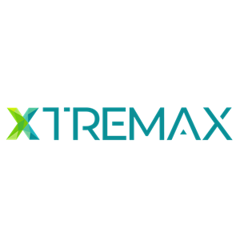

A collection of projects and professional work across database infrastructure, cloud data pipelines, and business intelligence solutions.
Managed and maintained Microsoft SQL Server environments for enterprise clients and government agencies.
Assisted organizations in migrating legacy databases into modern SQL Server environments with minimal downtime.
Built scalable end-to-end data pipelines for analytics and reporting systems using cloud technologies.
Developed centralized data warehouse solutions for internal analytics and operational reporting.
Danone Indonesia
GovTech Singapore
Designed interactive dashboards for management reporting and KPI monitoring.
Built dashboards to monitor operational metrics, trends, and business performance.

Xtremax Pte Ltd
Danone Indonesia